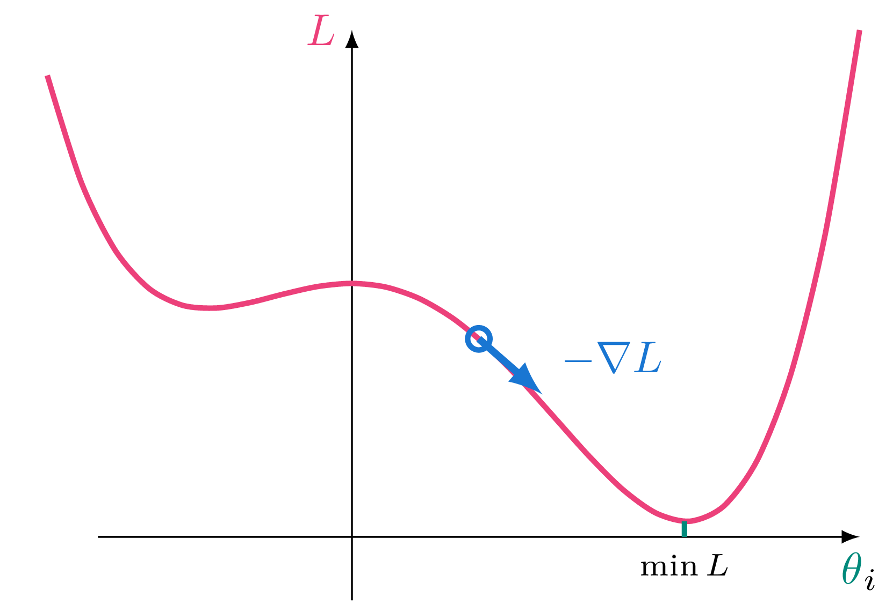
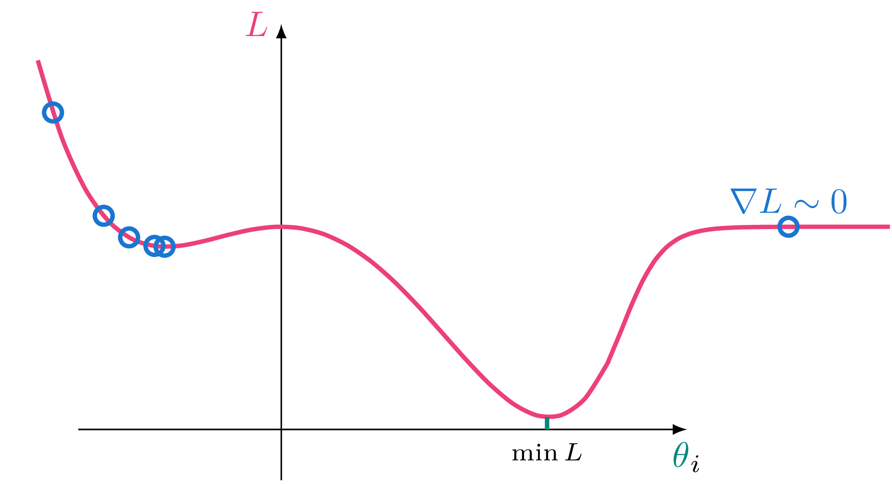

NORSAR ML Workshop
Day 1 – Wednesday
steffen.maeland@norsar.no
2025-09-17
Agenda
Today
9.00
Intro
9.30
Exercise: Event detection
10.00
Post-exercise: Understanding what we did
11.00
Exercise: Event classification
11.45
✨Special✨ lunch
12.30
Discussion
13.00
End of day 1
Tomorrow
9.00
Recap from yesterday
9.15
Deep learning tools
9.30
Exercise: Training deep learning models
10.00
Post-exercise: Finding the optimal model
10.30
Recent and future ML at NORSAR
11.00
Hackathon
11.45
Lunch (kantinen)
12.30
Wrap-up and discussions
13.00
End of day 2
What can you do with machine learning?
(outside of seismology)
The what
Artificial intelligence (AI): Machine learning (ML): Deep learning:
The big AI tools of today are driven by advancements in
Deep learning – bigger and better models
Computing – bigger and better processors
The what
Traditional approach: Symbolic or rule-based AI
IF amplitude > threshold AND duration > 2 secondsTHEN earthquake; ELSE noise;
Machine learning approach:
This is an earthquake
This is not
Compute a function to separate the two.
Task that have been solved with ML
Task that have been solved with ML
Source parametrisation
Focal mechanism estimation
Ground motion characterisation
Deep learning seismology papers
https://smousavi05.github.io/dl_seismology/
https://smousavi05.github.io/dl_seismology/
https://smousavi05.github.io/dl_seismology/
The what
Some terminology:
Model: Parameters: Label: Supervised learning: Unsupervised learning: without explicit labels
We also need to know some statistics, but let’s deal with that later.
The what
Today and tomorrow:
Intro to modern ML technologies, which is mainly pattern recognition .
The why
Modern ML tech is accessible!
The major frameworks are
open source , and(relatively) easy to use .
The wow
Open datasets
Some readily available datasets suited for ML:
STEAD : 1.2M 3C waveforms from 450k local earthquakes
INSTANCE : 1.3M 3C waveforms from 54k local and regional earthquakes
CREW : 1.6M waveforms from regional earthquakes
MLAAPDE : 5.1M waveforms from local to teleseismic events
(others exist too)
Prepped NORSAR catalog for regional events recorded at ARCES: Zenodo
Exercise number 1
Comparing detection methods
Open in Colab or download
Post-exercise
Understanding what we did
Crosscorrelation
Template identical to signal
Crosscorrelation
Template not identical to signal
Crosscorrelation
Short template
Crosscorrelation
Multiple short templates
Transitioning into ML
We’ll pursure three ideas:
Multiple, short templates
Doing correlation on top of
Learn optimal templates, rather than selecting explicit ones
Deep learning
The point of deep learning is to sequentially learn better feature representations , and use these to solve a task.
representation(e.g. crosscorr)
representation (e.g. crosscorr)
representation (e.g. crosscorr)
Training
Optimal choice of model parameters can usually not be found analytically
\(\rightarrow\) need to iteratively search for it, which we call training
Deep learning models are essentially composite, differentiable functions, meaning we can use gradient descent
Good: DL libraries do the differentiation for us!
Bad: It’s computationally expensive
Good: Modern hardware (GPUs) are very efficient at this (also, it could have been worse )

\[
\small
\nabla \color{MediumVioletRed}{L}(\color{teal}{\boldsymbol{\theta}}) =
\begin{bmatrix}
\frac{\partial \color{MediumVioletRed}{L}}{\partial \color{teal}{\theta}_0} \\
\vdots \\
\frac{\partial \color{MediumVioletRed}{L}}{\partial \color{teal}{\theta}_n} \\
\end{bmatrix}
\]
Hardware acceleration
Deep learning training and inference is considerably faster on a graphics processing unit (GPU)
For the next exercises we can enable it in Colab by selecting
Runtime \(\rightarrow\) Change runtime type \(\rightarrow\) T4 GPU
The NORSAR GPU server is available at
Selecting hyperparameters
Evaluating models
Evaluating a model should be done on an independent
Typically we set aside a part of the data, and use this only for final evaluation.
# "X" are the data, "y" are the targets. from sklearn.model_selection import train_test_split= train_test_split(= 0.25 , random_state= 42
Comparing models
Model selection
In case we want to compare different models, we need a third set: validation set
The test set is still only for final evaluation
ML models are prone to overfitting – i.e. memorising the training data.
How do we know if (when ) this happens?
Can compare performance on the training set to the validation set
Exercise number 2
Training an earthquake classifier
Open in Colab or download
Constructing a deep learning model
model.summary
-> look at keras.io
The joys of training a model
Recall gradient descent:
The joys of training a model
Recall gradient descent:
Local-> bad predictions
The joys of training a model
Recall gradient descent:

Local-> bad predictions
Plateau-> slow convergence
Going further: Phase picking
A yes or no classification in a time window is a little simplistic
For an automated system we rather want phase picks:
Then: How to define the labels?
Going further: Phase picking
Reformat the labels into 3-component time series:
\(\rightarrow\) More on this tomorrow
Zhu, W., & Beroza, G. C. (2019). PhaseNet: a deep-neural-network-based seismic arrival-time picking method. Geophysical Journal International, 216(1), 261-273.